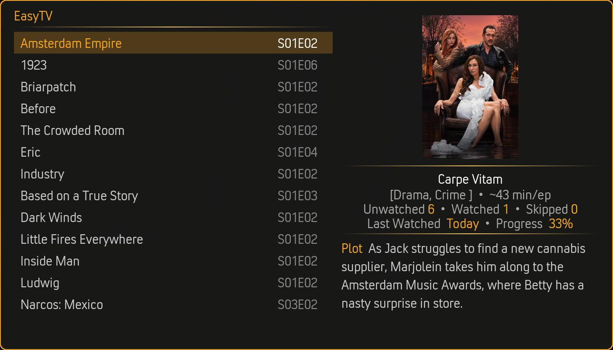
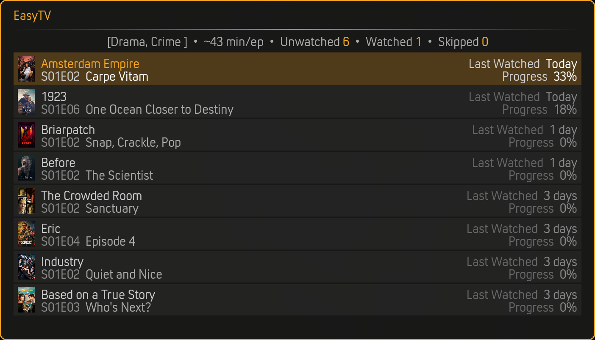
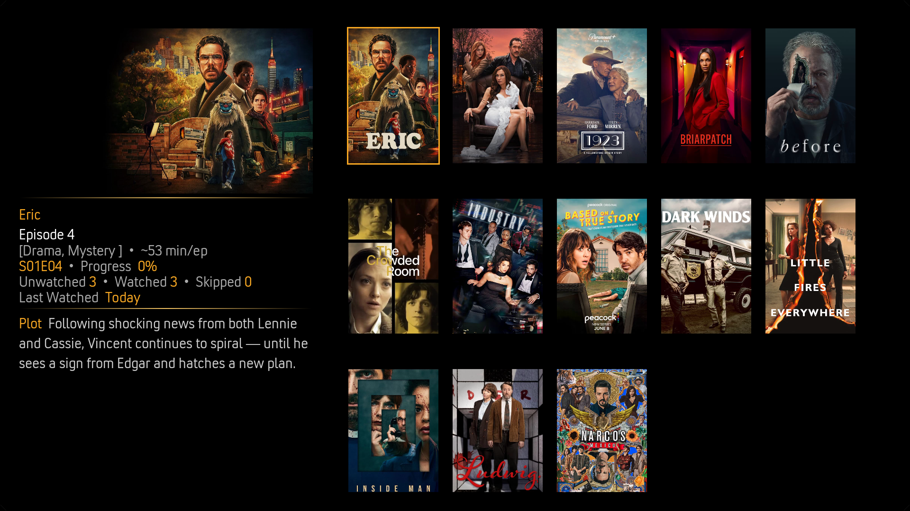
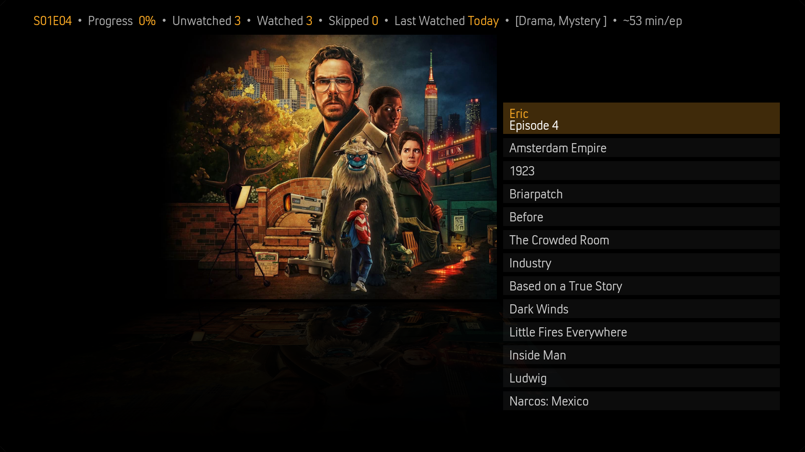
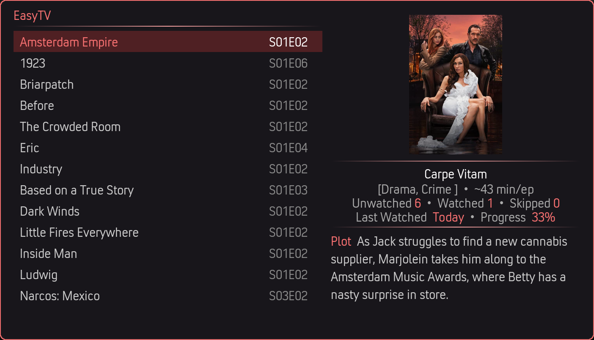
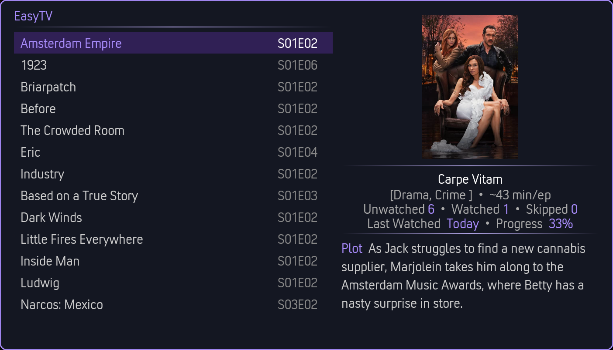
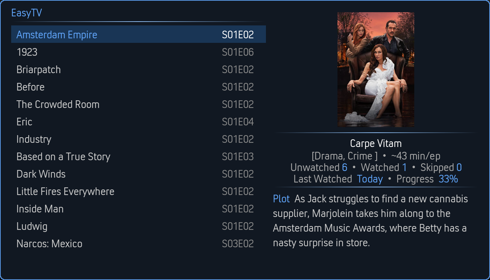

No scrolling. No deciding. Just watching.
EasyTV transforms your Kodi library into a personal TV channel. It tracks the next episode for every TV show and enables lean-back viewing through randomized playlists.

Key Features
Smart Episode Tracking
Always knows your next episode, even with gaps in watch history
Browse Mode
See all your shows with their next episode. Pick what you're in the mood for.
Random Playlists
One click starts a shuffled playlist. Sit back and let EasyTV decide.
Multi-Instance Sync
Keep EasyTV's episode tracking in sync across all your Kodi devices — automatically
Smart Playlist Filtering
Use Kodi smart playlists to filter and organize your content
Clone Support
Multiple EasyTV instances with different configurations on your home screen
Mix in Movies
Blend movies into your random playlists for a true personal TV channel experience
Duration Filtering
Only have 30 minutes? Filter to shows with episodes that fit your schedule
...and much more. Explore the full feature set
Four Ways to Browse

Card List
Posters
Big ScreenChoose Your Theme


